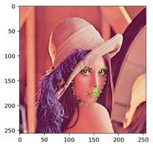

- Thu 29 March 2018
- python
- mani3
- #python dlib
準備
事前に以下の場所から shape_predictor_68_face_landmarks.dat.bz2 をダウンロードしておいて、
tmp ディレクトリとかに解凍しておきます。
.
├── images
│ └── Lenna.png
├── python-dlib-face-landmark.ipynb
└── tmp
├── shape_predictor_68_face_landmarks.dat
└── shape_predictor_68_face_landmarks.dat.bz2
Face landmark detection
import sys, os
import glob
from PIL import Image, ImageDraw
import numpy as np
import dlib
import cv2
def load_image(file, w=256, h=256, mode='RGB'):
image = Image.open(file)
image = image.resize([w, h], Image.ANTIALIAS)
return image
def draw_landmark(image, rect=None, predictor_path='./tmp/shape_predictor_68_face_landmarks.dat'):
if rect is None:
rect = dlib.rectangle(0, 0, image.width, image.height)
img = np.array(image)
predictor = dlib.shape_predictor(predictor_path)
shape = predictor(img, rect)
for i in range(0, 68):
x = shape.part(i).x
y = shape.part(i).y
cv2.circle(img, (x, y), 1, (0, 255, 0), -1)
return img
この辺は jupyter notebook 上に表示してます。
image = load_image('./images/Lenna.png')
rect = dlib.rectangle(100, 100, 180, 200)
image = draw_landmark(image, rect)
plt.imshow(image)
plt.show()

あとあと調べてみたら
こちらのサンプルコードを見たほうが良さそう